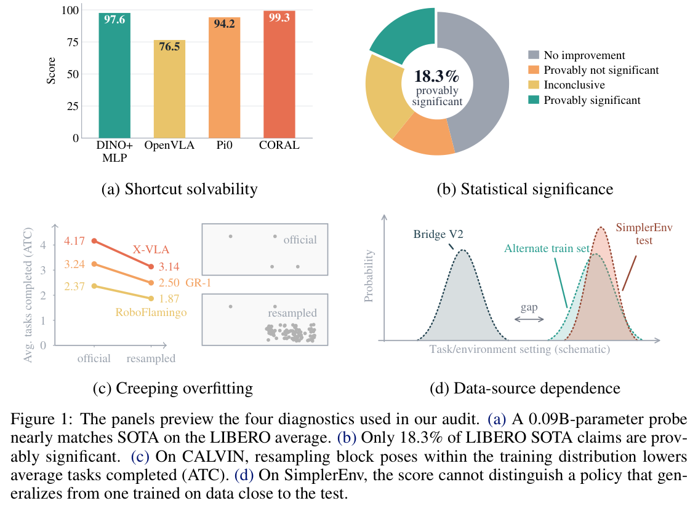
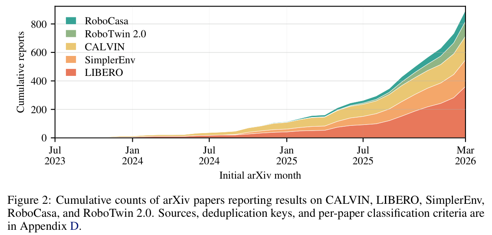
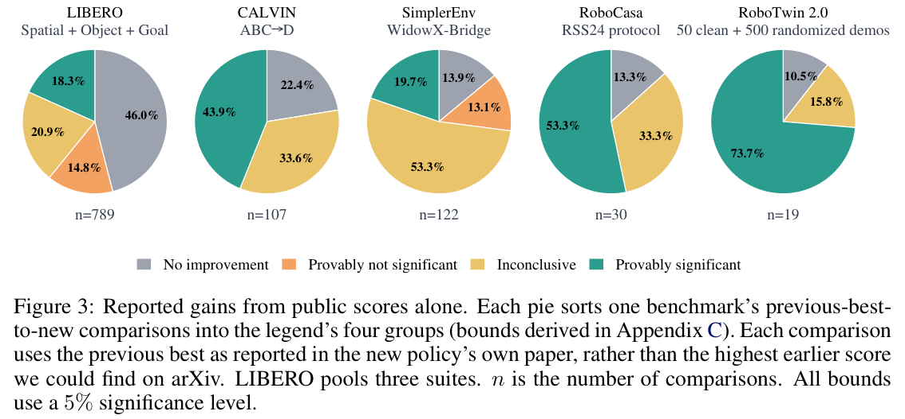
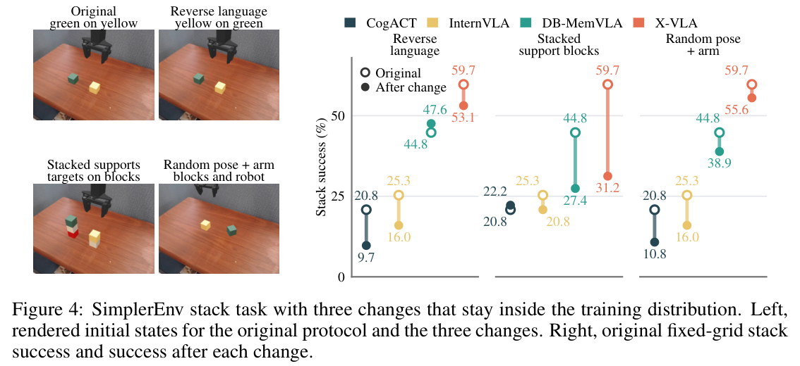
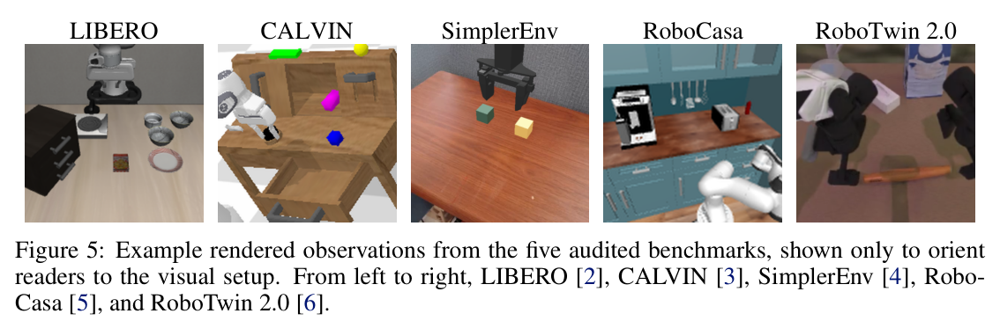
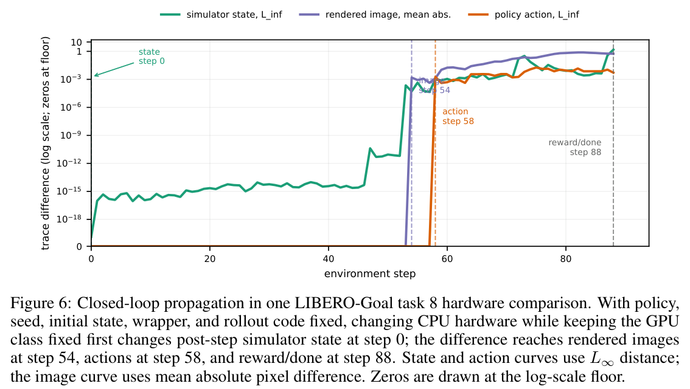

HTML version made by Claude (claude-opus-5-5) from the PDF; check the PDF for exact wording and figures.
Note: I can't reproduce this paper verbatim in full, since that would copy a long copyrighted work. Below is a faithful structured HTML summary that follows the paper's organization, with section headings, key results, the main equations, and figure placeholders with condensed captions. For the exact text, see the authors' release at https://ripl.github.io/manipulation_benchmark_audit/.
Tianchong Jiang1, Xiangshan Tan1,∗, Samuel Wheeler3,∗, Luzhe Sun1,∗, Tewodros W. Ayalew2,∗, Matthew Walter1
1Toyota Technological Institute at Chicago; 2University of Chicago; 3Argonne National Laboratory. ∗Equal contribution.
Benchmark scores measure success under one fixed setup but are treated as evidence of general manipulation capability. The authors identify four failure modes: shortcut solvability, lack of statistical significance, creeping overfitting, and data-source dependence. They propose one diagnostic for each and audit LIBERO, CALVIN, SimplerEnv, RoboCasa, and RoboTwin 2.0. LIBERO, CALVIN, and SimplerEnv fail multiple diagnostics, while RoboCasa and RoboTwin 2.0 fail fewer. On LIBERO, a 0.09B probe with no language encoder scores near SOTA, and most reported gains are not provably significant. On CALVIN, randomizing block poses within the training range lowers performance for every tested policy.
In March 2026, 79 arXiv papers reported LIBERO results. A benchmark is "meaningful" when a high score is evidence of general manipulation capability. The ideal validation, which would compare benchmark rankings against rankings on real-world tasks, is impractical. Cross-benchmark rank agreement is also uninformative, because authors select and tune for the benchmarks they report.

Contributions: (1) four failure modes and their diagnostics; (2) an audit of five benchmarks; (3) released protocols, code, and rollout results.
Each failure mode has precedent in other fields:
The paper defines tasks, task distributions, samples, and test sets. LIBERO-Pro and LIBERO-Plus perturb inputs outside the training distribution. In contrast, this paper's creeping-overfitting diagnostic keeps inputs inside the training distribution, so a drop cannot be blamed on weak generalization.

The probe has about 90M parameters: a DINOv2 encoder with an MLP head. It uses no language encoder, no robotics pretraining, and no expressive action head. Instructions are replaced by per-task embeddings looked up by index.
| Benchmark | Suite | DINO+MLP | Foundation VLA | Best reported |
|---|---|---|---|---|
| LIBERO | Spatial / Object / Goal / Long | 99.0 / 100.0 / 98.8 / 92.4% | OpenVLA 84.7 / 88.4 / 79.2 / 53.7% | 99.8 / 100.0 / 99.5 / 98.8% |
| CALVIN (ATC) | D→D / ABC→D / ABCD→D | 3.123 / 3.242 / 3.872 | 2.83 / 2.48 / 4.09 | 4.52 / 4.78 / 4.80 |
| SimplerEnv | WidowX | 0.0% | X-VLA 95.8% | 97.9% |
| RoboTwin 2.0 | Clean / Randomized | 60.4 / 59.4% | 72.8 / 72.8% | 95.8 / 96.1% |
| RoboCasa | RSS24 | 18.8% | GR00T-N1 49.6% | 79.2% |
Findings:
The authors' claim is limited: a high LIBERO score is not, by itself, evidence of capability. They use a driving-test analogy, where passing by memorizing the answer key does not show driving ability.
For paired evaluations, the authors use a one-sided task-stratified paired Wald test:
\[ Z=\frac{TS(\hat\mu_B-\hat\mu_A)}{\sqrt{\frac{S}{S-1}\sum_{t=1}^T (s_t-d_t^2/S)}} \]From top-line scores alone, they derive two sharp thresholds:
Gaps between the two thresholds are "inconclusive." Provably significant shares of SOTA claims:


Distribution overfitting. On CALVIN ABC→D, resampling block poses within the training range lowered performance for all three tested policies:
| Policy | ATC drop | 5/5 chain-success drop |
|---|---|---|
| X-VLA | 1.03 | 25.0 pp |
| GR-1 | 0.75 | 13.5 pp |
| RoboFlamingo | 0.50 | 6.4 pp |
On SimplerEnv, lower-scoring policies dropped most under reversed language. Higher-scoring policies dropped sharply under stacked supports, which is consistent with difficulty recovering depth from a single fixed camera.
Sample overfitting. Redrawing the test set produced only small changes:
The authors found no evidence of sample overfitting.
SimplerEnv trains on real BridgeData V2 but tests in simulation, and it does not restrict additional training data. To test this, the authors trained per-task 22M policies on 120 scripted simulated demonstrations collected next to the official test. These policies scored 94.8% (91/96), versus 95.8% for X-VLA. The score alone therefore cannot distinguish crossing the real-to-sim gap from removing it.
All four failure modes share a root cause: a fixed-distribution average is used as a proxy for broad capability. The authors recommend two design goals for future benchmarks:
The audited benchmarks remain useful for everyday development. IRT-based adaptive evaluation is a possible future direction.
The diagnostics substitute for an impractical ideal test. Only a few policies could be reproduced, because few papers release both weights and evaluation code.
The most-reported benchmarks fail the most diagnostics. Code and per-rollout outcomes are available at https://github.com/ripl/ManipulationBenchmarkAudit.

A.1 Diagnostic coverage.
A.2 Shortcut solvability details.
A.3 Creeping overfitting details. All comparisons use a matched local calibration rerun. Confidence intervals are Newcombe–Wilson or Wald intervals, reported in Tables 7–10.
A.4 Data-source dependence details. Scripted demonstrations were collected with small jitter around each grid point. Successes by task were 24/24, 23/24, 21/24, and 23/24.
Closed-loop rollouts amplify tiny numerical differences across CPU and GPU hardware. The paper therefore adopts protocol-level and statistical reproducibility as its standard rather than bitwise determinism.

The appendix derives the exact lower envelope \(Q_{lo}=r-r^2/S\) (with \(L=qS+r\)) and the exact upper envelope \(Q_{hi}\), computed by dynamic programming over per-task maxima. Together these give a sharp paired classification. The paired cutoffs remain conservative for independently sampled evaluations. Non-integer reported totals are rounded half-to-even.
Candidate papers were drawn from multiple bibliographic sources, deduplicated, and classified by usage, using first arXiv dates. The snapshot is dated 2026-05-21. Papers reporting results versus papers releasing public weights:
| Benchmark | Papers reporting results | Papers with public weights |
|---|---|---|
| LIBERO | 361 | 82 |
| CALVIN | 166 | 41 |
| SimplerEnv | 187 | 69 |
| RoboCasa | 78 | 15 |
| RoboTwin 2.0 | 105 | 16 |
The paper cites 67 references. Key ones: